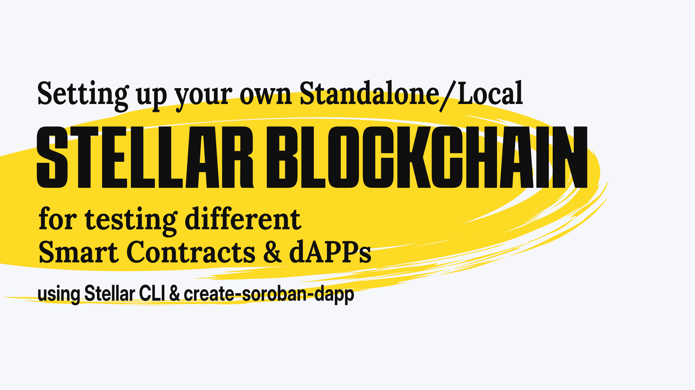

Setup your own Standalone/Local Stellar Blockchain to test different Smart Contracts & dApps

Introduction to Stellar Blockchain
Stellar is an opensource decentralized blockchain. The Stellar protocol is supported by Delaware nonprofit corporation and the Stellar Development Foundation. It’s founded by Jed McCaleb & Joyce Kim.
The tutorial or walkthrough, to be specific; is something I developed during the Hackathon challenge by Stellar on dev.to. You can follow either the video or this article, to setup your own standalone/local Stellar blockchain on your system.
Note: You need to have a minimum of 8GB RAM to run a whole Stellar blockchain validator.
Why run your own Standalone/local Stellar Blockchain
Once in while we try to test funny messages, just to see how it would look like. During development we often type in different embarassing/funny statements to have a fun at it. We crash a lot when we hack. Often times the users would able to experience this. And might come up to the conclusion that we are just playing with the dApp, and are not dedicated to provide a dedicated service.
Aren't you tired of different embarassing mistakes people might see when you are developing the blockchain. With this tutorial you can have your own blockchain setup!
Where you’re able to experiment with different styles of smart contracts and test them without fearing the public eyes. So, let’s get started shall we?
Setting up your development environment
In order to run a basic Stellar blockchain validator node and prepare your device for the build & development of smart contract and a dApp, you need to have certain prerequisites. For following with this tutorial or walkthrough you need to have the Rust toolchain, an editor that supports Rust development and Stellar CLI.
Install Rust
Linux, MacOS, or other UNIX-like OS
You can install Rust by running the following command in your favorite terminal
curl --proto '=https' --tlsv1.2 -sSf https://sh.rustup.rs | sh
Windows
For Windows devices, you can download the rustup-init executable from rust-lang.org and follow the instruction to proceed with installing it.
Note: If you are using WSL or WSL2, you can follow the instructions for Linux, to install Rust
Other
For other methods of installing Rust, see: https://www.rust-lang.org/tools/install
Install the target
And once your have Rust set up. You need to be able to compile a WASM binary using Rust. For that you would need to configure rustup to install the wasm32-unknown-unknown target.
Run the following command in your terminal of choice to install the wasm32-unknown-unknown target.
rustup target add wasm32-unknown-unknown
Configure your Editor/IDE
Rust is supported by majority of editors. You can follow https://www.rust-lang.org/tools setting it up for your favorite IDE.
I’ll be mentioning about VS Code, as it the one I was using at the time I was writting this tutorial. In a later article, I might provide the development setup for NeoVim. As I often use NeoVim to have a more comfortable environment to code.
VS Code
-
If you haven’t already installed VS Code, you can do so by downloading VS Code
-
Install rust analyzer extension for VS Code from the Marketplace.
Which is an implementation of Language Server Protocol for Rust programming language. It provide a lot of useful features for your development in Rust, such as code completion, syntax highlighting, inlay hints, etc. You can checkout the manual of rust analyzer to know more about it.
-
You would also need CodeLLDB debugger extension. It helps you to debug your Rust code, by providing various debugging information and features like stepping through code, applying breakpoints, logpoints, etc.
Install Stellar CLI
Stellar CLI is a command line tool that helps you to run & deploy your Soroban smart contracts onto different networks of Stellar blockchain. Whether that be testnet, futurenet, mainnet/pubnet or the standalone/local. We would be using Stellar CLI mainly to ease our development & deployment of our smart contracts.
Install the latest version from source:
cargo install --locked stellar-cli --features opt
Install with cargo-binstall:
cargo install --locked cargo-binstall
cargo binstall -y stellar-cli
Install with Homebrew:
brew install stellar-cli
How to run your own Stellar blockchain instance, also called standalone/local?
You can use the Stellar Quickstart Docker image to run your own instance of Stellar. You can follow the instructions in the readme to learn more about the quickstart image.
We will be using the testing tagged image for our development environment.
- Start Docker & run
This will start a quickstart container of Stellar blockchain instance and display the status logs of the standalone blockchain instance. You will also see information about the Public and Private keys. Take a note of them, as we will be needing them later on.docker run --rm -it \ -p 8000:8000 \ --name stellar \ stellar/quickstart:testing \ --local \ --enable-soroban-rpc - You can check the status of the instance, by querying the Horizon API like so:
you can also use your browser, if you prefer your browser over curl.curl "http://localhost:8000"
Configuring network & identity using Stellar CLI
In order for us to interact with the standalone/local instance of the Stellar blockchain using Stellar CLI, we need to configure the information about the network to be used by the CLI.
- Add a network and define the RPC URL & the network passphrase
This will create astellar network add local \ --rpc-url http://localhost:8000/soroban/rpc" \ --network-passphrase "Standalone Network ; February 2017"/.soroban/networkdirectory in our root directory we are currently in, with our network configuration we just defined. - Next, we need to create an identity we would be using, to deploy the Smart contract onto our blockchain instance. Run the following to create an identity called
alicefor our network.
Stellar CLI would generate an identity inside thestellar keys generate alice --network local.soroban/identitydirectory and funds it using the friendbot. - You can retrieve the address of the identity we just defined using the Stellar CLI by running the command
stellar keys address alice
Using the create-soroban-dapp boilerplate to implement a dApp quickly
The create-soroban-dapp by Paltalabs is a boilerplate dApp for kickstarting your ideas. It’s much similar to the create-react-app. To setup create-soroban-dapp follow the steps below.
- Visit create-soroban-dapp on GitHub and clone the project on your system.
git clone https://github.com/paltalabs/create-soroban-dapp.git
Initialize create-soroban-dapp
First cd into the directory soroban-react-dapp inside our cloned create-soroban-dapp folder.
- To set up
.envfile according to the.env.example, runcp contracts/.env.example contracts/.env - Copy & paste the
ADMIN_SECRET_KEYto .env file. You can find them in the standalone blockchain container logs, we ran using the docker container stellar/quickstart:testing. It is a key that starts withS. - And for the
MAINNET_RPC_URLgive the following
The finallocalhost:8000/soroban/rpc.envfile contents should look like the following# Stellar accounts Secret Keys ADMIN_SECRET_KEY="SC5O7VZUXDJ6JBDSZ74DSERXL7W3Y5LTOAMRF7RQRL3TAGAPS7LUVG3L" # RPC Setup MAINNET_RPC_URL="localhost:8000/soroban/rpc"
Note: You might have noticed that the secret key is exactly the same. This is because the docker quickstart image is configured with a fixed root account.
Compile & Deploy the Smart Contract onto the standalone/local network
-
From the
soroban-react-dappdirectory run the following one by one. This will install the packages and buildsoroban-react-dapp.yarn cd contracts/ yarn yarn build -
cdinto thegreetingdirectory inside thecontractsfolder & build the Smart Contract to WASM using cargo.cargo build --release --target wasm32-unknown-unknown -
Next we would be deploying the smart contract to the quickstart Stellar blockchain container via our predefined standalone/local network.
stellar contract deploy --wasm target/wasm32-unknown-unknown/release/greeting.wasm \ --source alice --network localThe CLI will output a contract address of the deployed WASM Smart Contract. Copy it.
-
In the
contractsfolder, you’ll finddeployment.jsonfile[ { "contractId": "greeting", "networkPassphrase": "Standalone Network ; February 2017", "contractAddress": "CAQLKKFSEOJF0932JGVF43NVCI3JDJKLEFFJSEJFLSEJFJ09233LKKFJJ" }, { "contractId": "greeting", "networkPassphrase": "Test SDF Network ; September 2015", "contractAddress": "CDJOI4JFJ3FJDMX3I4HFJ4WF9JAVPIHLEKJ4GDNL34HGFHELKG90JKLSH" }Replace the contract address of the Standalone Network, with the contract address you have received during the deployment.
-
You can now connect to the standalone network using the wallet of your choice. Just make sure you have configured to the wallet’s network to the standalone Stellar network, with the following configuration.
Variable Value Name Standalone HORIZON RPC URL http://localhost:8000 SOROBAN RPC URL http://localhost:8000/soroban/rpc Passphrase Standalone Network ; February 2017 Friendbot URL http://localhost:8000/friendbot Allow connecting to non-HTTPS networks true -
Now refresh the create-soroban-dapp in the browser. And connect your wallet with the network set to Standalone. The wallet will ask to fund your wallet using the friendbot. Confirm the request!
Finalle
Submit a new greeting and sign the transaction. You shall see the updated greeting!